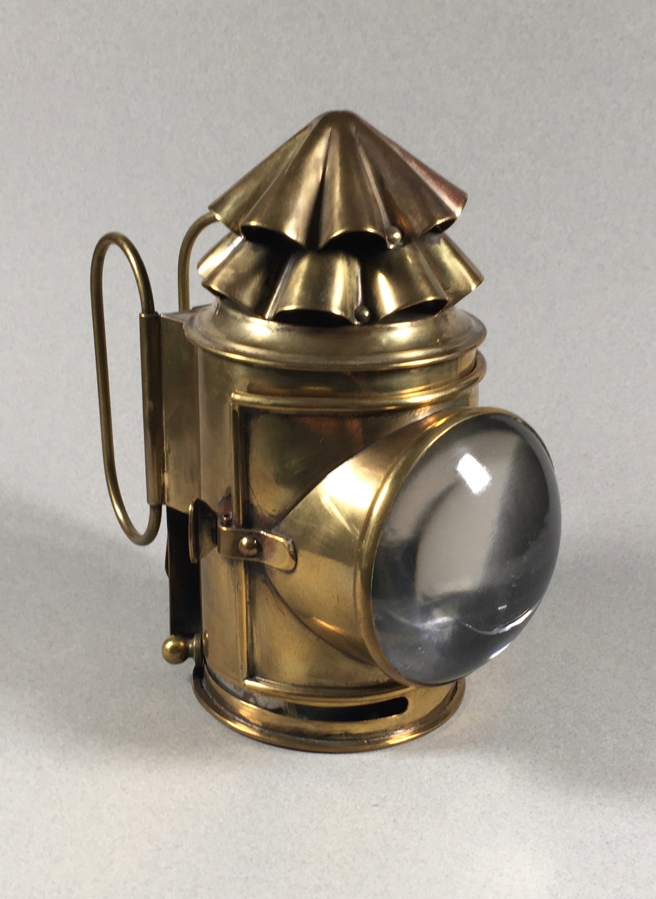
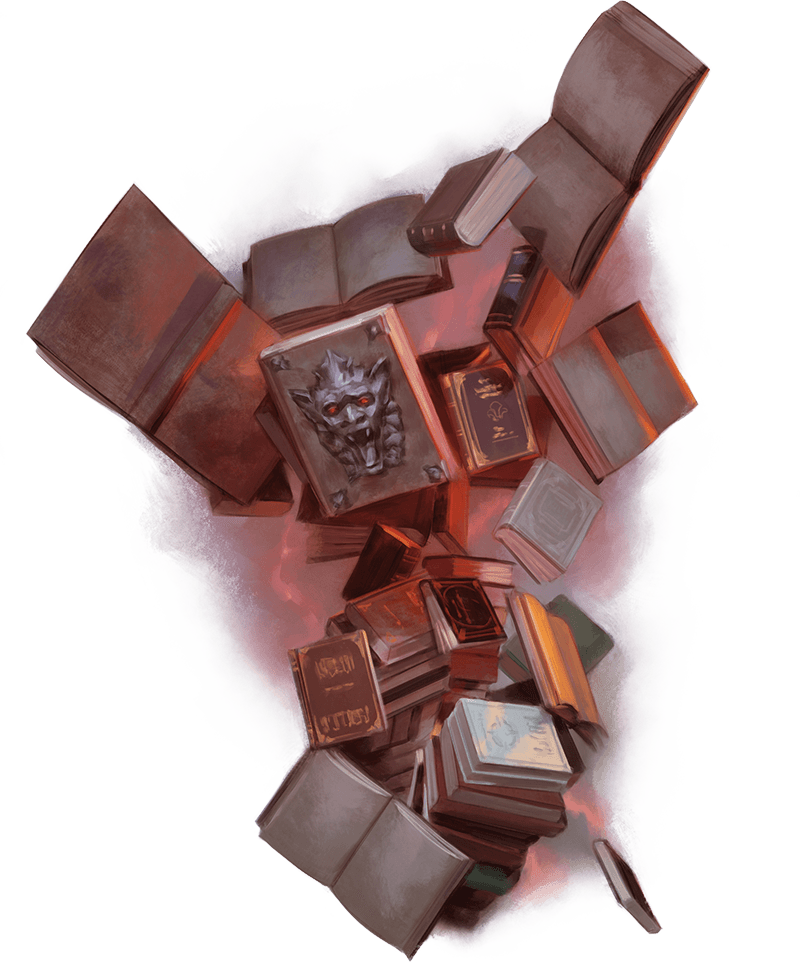

Subject The Search For Ripper From Dilyn Corner <dilyn.corner@tutanota.com> Date Fri, 11 Feb 2022 21:00:00 -0500 Our adventurers found themselves squaring off against three suddenly animated skeletons. Luckily, they were quickly dispatched with little issue; Bryn shined as somewhat of an undead slayer with her deft blows. Unfortunately, Rhaena sustained a brutal arrow wound. Luckily, some strange magic she seems to have available to her provided some much needed healing. After snatching a small patch of carpet from this room (Tab is perhaps a little shady), our heroes ventured further west in the mansion towards a room with a door slightly ajar. Inside this room, they discovered a massive library - multiple shelves of books from floor to ceiling filled the walls and floor of this room, surrounded by desks with small, ever-burning lamps. After a small bit of investigating, they discovered a latern! Tab was less careful than intended with this lamp, and after the clasp popped open, a... bird(?) appeared!  After some quick negotiating and explaining, The newfound companion (an Aarakocra named Ris) joins our haphazard troupe on their quest to find Ripper. In exchange for his help, the party agreed to help Ris carry some books out of this room - he has a bit of an obsession with literature, it seems. Unfortunately, this venture is swiftly interrupted. Bryn identifies, just in time, that not all of these books are what they at first appear to be!  The party is attacked by two swarms of books - constructs whose purpose is not entirely obvious. Are they here to defend the books? Are they mindless monsters bent on the destruction of nonbook entities? It remains unclear. With some swift carving and well-placed firebolts, however, our party finds themselves freed of the threat. The quest continues. Before leaving the room, the party collects a book with an R gilded on the spine - very similar to the book found in the previous room. Interesting. The now six-member party heads back the way they came and, being the completionists they now ostensibly are, decide to make their way into a room with a closed door! Inside the room, a horrific site meets them: a woman in a white nightgown, with long black hair matted and obscuring her face, silently and monotonically sweeping a single corner of this otherwise sparsely populated room. Rin appears to be the only one who can't see this strange, compulsive woman. The party attempts to get her attention, but she doesn't seem interested in anything they have to say. After a few minutes of speaking to her and trying to reason with her, more people join Rin - the woman inexplicably disappears. Eventually, it is only Bryn who can see this woman. Her face increases to almost an inhuman speed, a small glow climbs up the broom's handle, and Bryn hears this woman utter "Take it. Take it from me." Bryn is absolutely struck, petrified by this terrifying woman. Tab, concerned for Bryn's shock and silence, attempts to help her - he chucks a knife in her direction, and Bryn snaps out of her stupor. The room is looted quite quickly; a collection of weapons removed from a table on one side of the room, the strange mannequin on the opposite side left almost entirely undisturbed (aside from an "errant" knife throw - caution is important!). Before the party continues on to the rest of this very strange mansion, Rhaena investigates the broom. The broom springs to life and attacks! Luckily, the party is very quick to react - perhaps they are now used to the antics of this haunted house - and easily carve the broom in half. The party, satisfied with their accomplishments (what some might refer to as stealing and murder), carry on exploring the first floor of this mansion. As the party approaches a door on the otherside of the staircase marking the midpoint of this hall, they hear two voices: "I didn't know, I didn't know, I didn't know" -- An inconsolable voice, stuck repeating this phrase. They sound quite young. "It's not your fault, It isn't your fault, it's okay" -- an older sounding woman, seemingly trying to console the younger person. What lies beyond this door? Let's find out. ________________________________________________________________________________ Dilyn Corner (C) 2020-2025